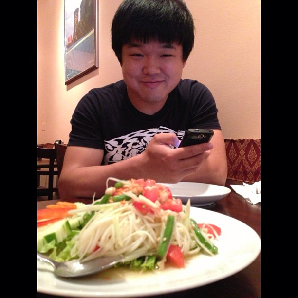
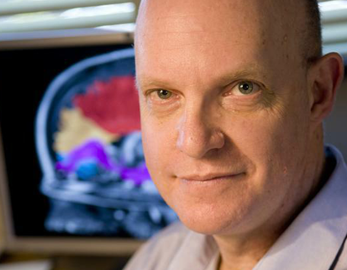
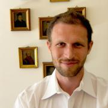
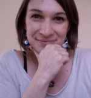

People
COMPUTATIONAL NEUROSCIENCE AND GENETICS RESEARCH AND TECHNOLOGY IN SCIENCE (CONGRATS) GROUP
Key Members
Professor Bruce D. Spencer
Professor Spencer is interested in production and use of public statistics. He has focused on questions such as (i) how are the data used, (ii) what is the quality (including accuracy, relevance, timeliness, etc.) of the data, (iii) how would changes in the quality affect uses, and (iv) how can we assign measures of value to those effects. He served on the recent National Academy of Sciences Panel to Review the Programs of the Bureau of Justice Statistics.
Professor Hongmei Jiang
Professor Jiang is interested in computational biology and bioinformatics, multiple testings, and microarray data analysis.
Professor Ji-Ping Wang
Professor Wang is interested in statistical applications in biology and medical sciences. His recent work concerns developing statistical methods and tools for large-scale, high-dimensional genomic, genetic and human brain mapping data. Some working topics include species number estimation, nucleosome positioning mapping, next-generation sequencing analysis, fMRI data in human brain mapping and Bayesian network with applications to The Cancer Genome Atlas (TCGA) data.
Oliver Y. Chen
Oliver is interested in high-dimensional brain mediation analysis: theory and methods. For example, he is interested when the intermediate variable is a high-dimensional vector, computational modelling and programming, computational (theoretical) neuroscience, neuroimaging, and high-dimensional longitudinal functional data analysis.
Philip Marx
Philip is a PhD Candidate in Managerial Economics and Strategy at Kellogg School of Management at the Northerstern University. He is interested in using econometics theory and methods and apply them to high-dimensional brain data analysis.

Bear B. Xiong
Bear is a PhD candidate in Department of Statistics at the Northwestern University. He is interested in high-dimensional genetics, variable selection, and fMRI data analysis.
Friends and Collaborators
University of Oxford Experimental Neurology Group
The Experimental Neurology Group is led by Professor Peter Brown and has made major advances in understanding how abnormal interactions between brain cells cause slowness of movement, tremor and stiffness in patients with Parkinson’s Disease. The group takes a multidisciplinary approach combining experimental manipulations with sophisticated signals analysis and modelling. The group’s ultimate goal is to utilise their discoveries to improve treatment in Parkinson’s Disease and other illnesses where similar principles apply. The research programme is one of five comprising the Medical Research Council Brain Network Dynamics Unit at the University of Oxford, which Professor Brown directs.

Stanford University Vision Imaging Science and Technology Lab
Professor Brian A. Wandell is the first Isaac and Madeline Stein Family Professor. He joined the Stanford Psychology faculty in 1979 and is a member, by courtesy, of Electrical Engineering, Ophthalmology, and Radiology. He is Director of Stanford’s Center for Cognitive and Neurobiological Imaging. Wandell’s research centers on vision science, spanning topics from visual disorders, reading development in children, to digital imaging devices and algorithms for both magnetic resonance imaging and digital imaging.
Johns Hopkins University SMART Group
Professor Brian Caffo is a co-founder of the Johns Hopkins University Statistical Methods and Applications for Research in Technology (SMART) working group. He is interested biological signal analysis focusing on statistical methods development and applications. The group specializes in medical and especially neurological imaging and biosignals such as polysomnography and wearable computing.

Johns Hopkins University Neuroimaging Group
Professor Martin Lindquist is interested in mathematical and statistical problems relating to functional Magnetic Resonance Imaging (fMRI). The topics I am interested in involve designing new k-space sampling trajectories; developing new reconstruction algorithms for transforming the resulting k-space data into images; and the statistical analysis of fMRI time series data.

Harvard University Computational Cognitive Neuroscience Lab
Professor Sam Gershman is interested in understanding how richly structured knowledge about the environment is acquired, and how this knowledge aids adaptive behavior. His lab uses a combination of behavioral, neuroimaging and computational techniques to pursue these questions.

Harvard University Cognitive and Neural Organization Lab
Professor Talia Konkle characterize representational spaces of the mind and how they are mapped onto the surface of the brain. We focus primarily on high-level visual representation: how do we organize our knowledge of objects, actions, and scenes?